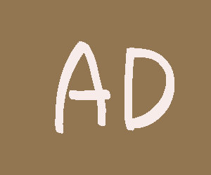

./ads/* パスの画像読み込みテストです。
このページには複数のダミー広告・トラッキング要素が含まれています。フィルターリストを購読して、これらが消えるか(またはロード・接続がブロックされるか)を確認してください。
※ 自分のGitHubユーザー名/リポジトリ構成が benisaru.github.io/test/ と異なる場合は、このリンクとフィルターリストの参照先URLを実際の公開先に合わせて書き換えてください。
このテキストは .sponsor-ad クラスを持っています。ブロックされるとこの枠ごと消えます。
判定中...
このテキストは #google_ads_iframe_test IDを持っています。
判定中...
./ads/* パスの画像読み込みテストです。
判定中...
./adserver/* パスのiframe読み込みテストです。
判定中...
判定中...
公開のWebSocketエコーサーバー(wss://echo.websocket.org)への接続を試みます。
フィルターリストの ||echo.websocket.org^$websocket が効いていれば接続は確立されないはずです。
判定中...(数秒かかります)

判定中...(画像読み込み待ち)
*/ads/redirect-target.jpg$redirect=1x1-transparent.gif により、
本来の画像の代わりに1x1の透明画像に差し替わるはずです。
上のボックスは ##.promo-box:has-text(スポンサー広告) というルールで非表示になるはずです
(単なる ##.promo-box だけでは消えない想定なので、テキストマッチ自体の動作確認になります)。
判定中...
判定中...
##+js(set-constant, __mbTestAdEnabled, false) により、
ページが true にしようとしている window.__mbTestAdEnabled が
false に固定されるはずです。